很抱歉没能赶在6月4日发出本文 :(
最近几天，俺把这个系列的前面30篇又整理了一下——主要是统一排版的样式。比如所有照片都统一用居中对齐，照片的说明统一都放在照片下方，也是居中对齐，并都加上全角括号。这样照片的说明文字就不容易跟正文混淆。
本系列的上一篇介绍了绝食抗议的决策是如何作出，今天这篇讲讲绝食第一天的情况。
先来介绍一下几个高校的绝食学生在出发之前的情形。
在次的绝食抗议中，北大是毫无疑问的主力。一个主要原因是柴玲在北大做了一个很煽情的演讲《我为什么要绝食？》（关于这个演讲，本系列前一篇有提及）。所以在这次绝食运动中，北大签名绝食的人数最多，而且比例很高——各高校签名参与绝食的大约三百到四百人，其中北大占了一百多人。
5月13日一大早，北大三角地就贴出了《绝食宣言》。到了中午时分，校广播站通报了绝食的行动方案，包括“什么时候出发，走什么路线，相关的口号”。（北大筹委会本来是反对搞绝食抗议的，但是同意把“校广播站”借给绝食的学生使用）
校内也贴出了相关的大字报，介绍相关的行动计划（比如下面这几张）：
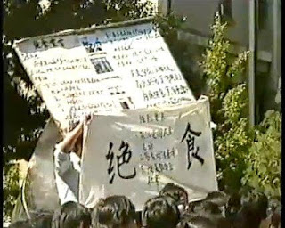
（北大学生在准备绝食的大字报）
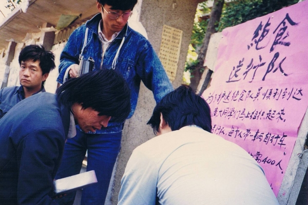
（大字报《绝食送行队》）
那天中午，北大的一些青年教师（包括如今名气很大的钱理群）在燕春园（当年北大最高档的校内餐厅）宴请那些参与绝食的学生。那顿饭被称为“最后的午餐”。
北大作家班的学员为绝食学生写了一个横幅：
（头缠白布条的绝食学生在北大燕春园吃“最后的午餐”）
在正式出发之前，为了表示严肃性，所有签名参与绝食的学生先在校内作一次宣誓，地点在29号楼前面（此楼前有一个“D & S”的金属雕像，象征“民主与科学”），由赵体国负责领读誓词（他在之前的示威游行中负责纠察队）。在宣誓之前，赵体国再次强调了绝食的纪律，他的原话是：
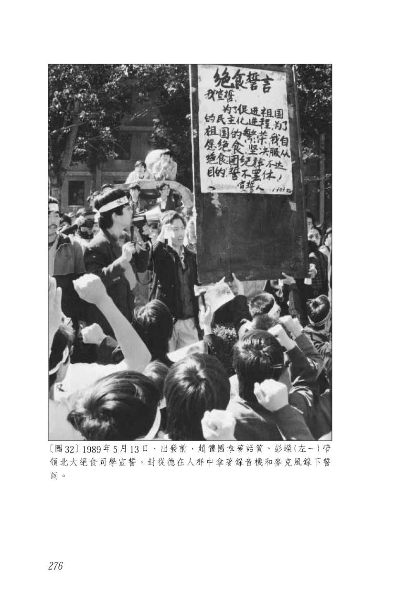
（赵体国带领北大绝食学生宣读绝食誓言）
北大的队伍于中午12点半在南门出发。当时有人在校门口贴了对联：风萧萧兮易水寒，壮士一去兮不复还。校门口挤满了围观的学生和市民。从下面的照片可以看出，连校门旁边的屋顶上都站了好些人。
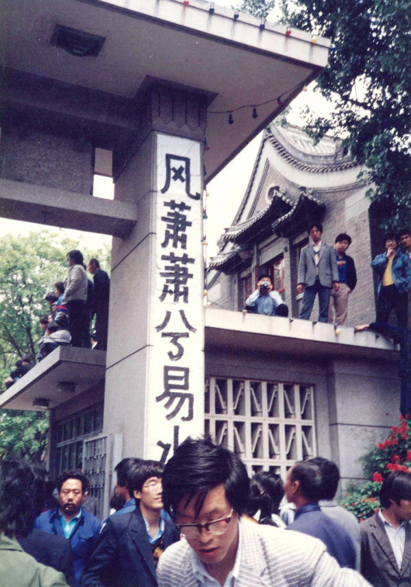
（对联：
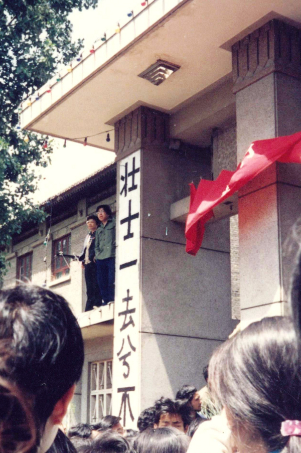
（对联：
说完北大，再顺便说一下政法大学。
如今名气很大的良心律师浦志强，当年是政法大学绝食抗议的积极分子。以下摘自吴仁华所写的《八九天安门事件大事记》（引文中的小括号是俺标注滴）：
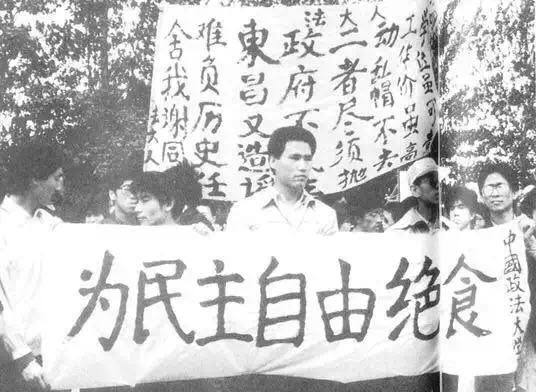
（13日中午，浦志强在校门口拉出“为民主自由绝食”的横幅）

（浦志强在广场上演讲，头上缠着“法大绝食”的布条，拍摄日期不详）
北师大的情形与北大完全相反——在当日上午【没有】进行任何准备工作。以下是王超华本人的叙述，摘自《回顾与反思——六四流亡学生17人》一书。
从王超华所说的这段至少可以看出：北师大的学生组织是【比较混乱】的。本系列的上一篇介绍了5月11日策划绝食的过程。其中提到有6个学生领袖在某个小饭馆开会讨论绝食的行动计划。这6人中，有3人就来自北师大，分别是：吾尔开希、程真、杨朝晖。结果到了5月13日那天，各高校的绝食队伍要正式启程前往广场，途中要到北师大会师。而北师大本校的学生组织，竟然都不知道这个计划！（是不是很讽刺？）有3个知情人，有超过一天时间，竟然没有把信息传达下去——这说明存在严重的沟通问题。
在本系列的第21篇，俺用了整整一篇博文来写《反思学运初期暴露出的问题》。这些弊端，在5月13日的北师大，再次得到体现。
大部分谈及六四的书籍或文章，都会提到《绝食书》或者《绝食宣言》。所以俺把这2份重要的文档全文引用如下：
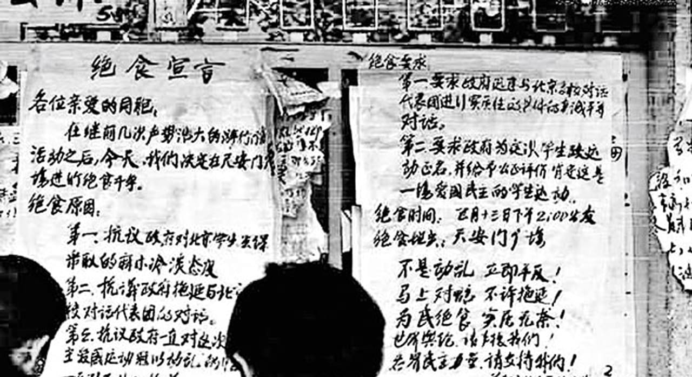
（张贴在北大的《绝食宣言》大字报）
《绝食宣言》是王丹起草的，而《绝食书》的作者有点争议——有的说是柴玲，有的说是白梦（北大作家班成员）。
在《回顾与反思——六四流亡学生17人》一书中，柴玲本人的复述如下：
在张伯笠（北大作家班学员，学生领袖）所写的《逃亡者》一书第8章，也提到《绝食书》。俺引述如下：
对于《绝食书》，俺个人的判断是：柴玲只是写了初稿，大部分内容应该白梦完成。《绝食书》的煽情效果，应该是白梦的功劳。
绝食团前往广场的这次游行，和以往的游行很不同。以往的游行通常是口号震天响，而13日这次，大多数人都是默默地走着。不论是签字绝食的学生，还是护送前往的学生，心情都很沉重。
当日下午15时左右，来自13所高校参与绝食的大约300多人在北师大的操场上集合。很多绝食的学生在头上缠了白色布条。大多数布条上写着“绝食”，还有些布条上写着“拼死一搏”、“腐败的掘墓人”、“因噎废食”之类的字样。另有一些绝食的学生绑着腰带，上面写着：“衣带渐宽终不悔，为民消得人憔悴”、“学子忍死望民主，何处今宵得自由”、“生也忧忧，死也悠悠”、“为了尊严与自立、我们只有以死抗争”......
以下几张照片是“北大绝食团”及“绝食送行队”骑车前往北师大的路上拍摄的。
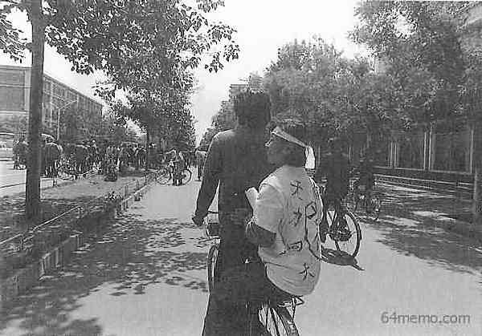
（骑车的是李禄，后座上是柴玲；另一个骑车的是熊焱）
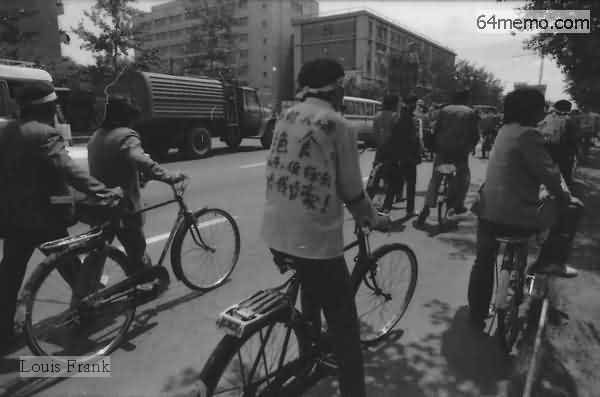
（某学生衣服上的标语：
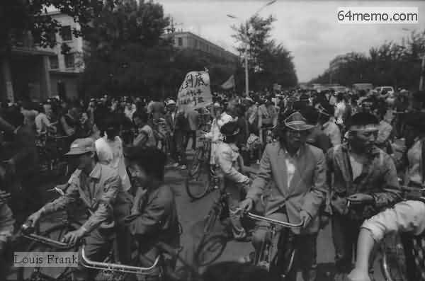
在北师大会合后，这300多名绝食者在两千多位学生的护送下，前往天安门广场。沿途围观的群众大概有几万人。据《王丹回忆录》中记载：他与吾尔开希、马少方、杨朝晖，4人手拉手走在队伍最前面的。
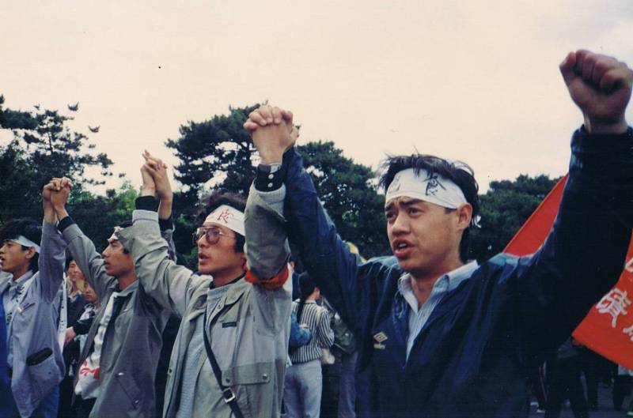
（队伍前列的4个学生领袖，从左往右依次是：杨朝晖、王丹、马少方、吾尔开希）
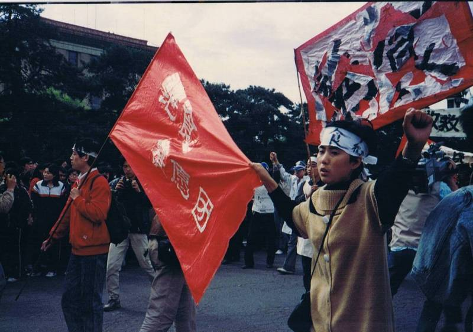
（紧跟在几个学生领袖之后的，是“绝食请愿团”的大旗。靠近镜头的女生大概是程真）
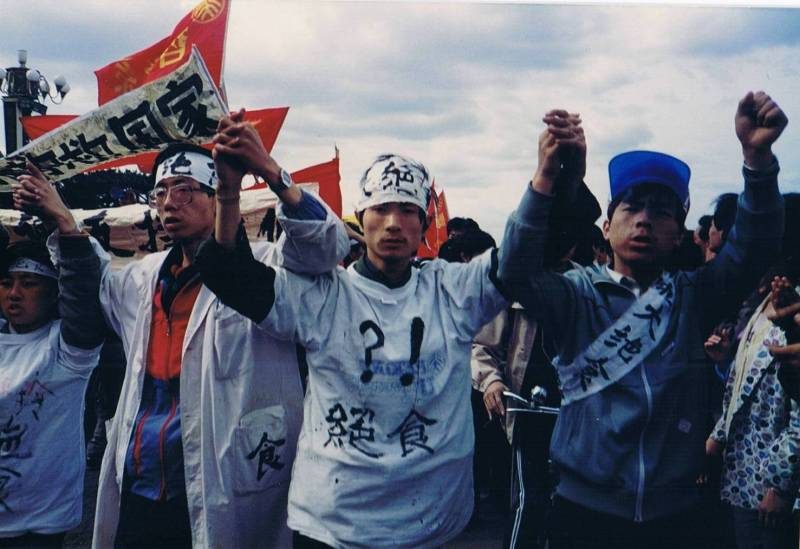
（最左边的是柴玲，身后的横幅写着：
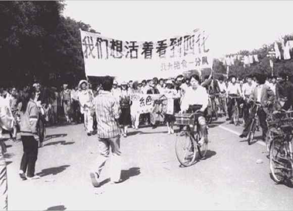
（横幅标语：
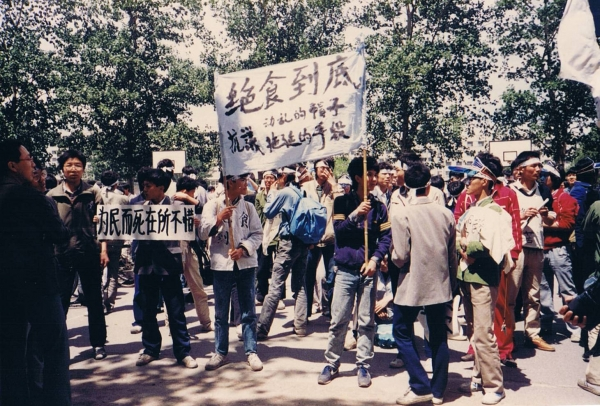
（横幅标语：
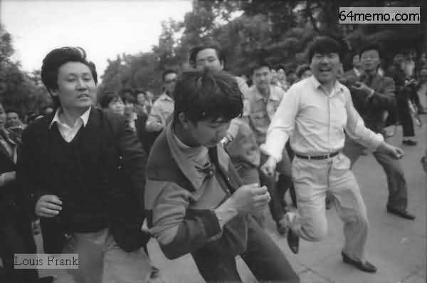
（纠察队抓住一个可疑的人，想混入队伍搞破坏）
下午15时到16时，陆续有队伍抵达广场。这些是一路骑车过去的，所以先到。先期抵达的人数大约四五百左右。
到了17时左右，步行的大部队抵达了广场（这批超过一千人，包括绝食者、救护队、纠察队、宣传队）。
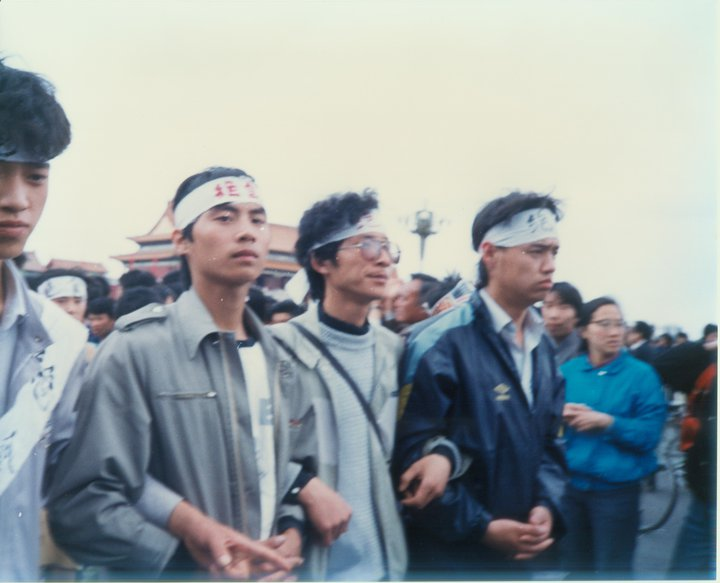
（这4个排头兵，前面已经介绍过了。背景的建筑是天安门城楼）
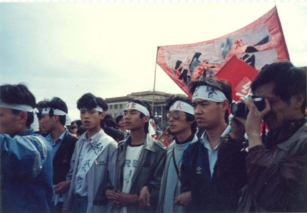
（这4个排头兵，前面已经介绍过了。背景的建筑是人民大会堂）
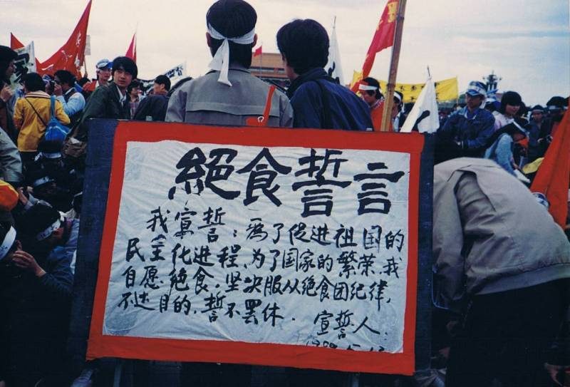
（写有《绝食誓言》的纸牌）
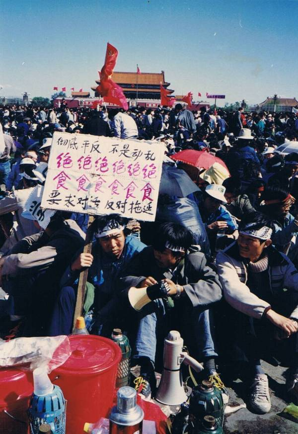
标语牌：
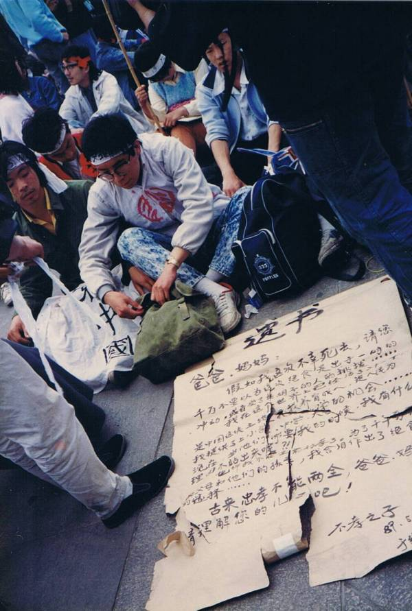
（某绝食者写的遗书）
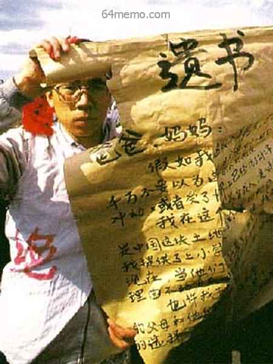
（某绝食者写的遗书）
大约在17时40分，王丹带领所有绝食者进行集体宣誓，连喊三遍：
下面这张就是当时的照片，很经典，在许多六四相关的网站上都能看到。
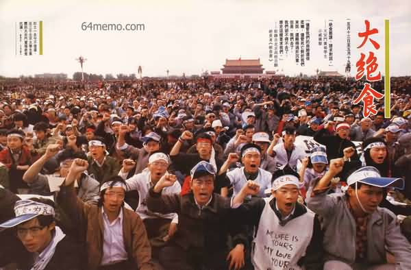
（最初的绝食团在集体宣誓）
当日傍晚18时左右，王丹、王超华、马少方作为绝食团和北高联（高自联）的代表，在广场边上的中国革命博物馆（如今的“中国国家博物馆”）西侧台阶举行中外记者招待会。王丹对中外记者宣读了《绝食宣言》（此宣言的内容，前面已经介绍过了），然后几个学生领袖回答了记者提问。王超华作为北高联的常委，本来是非常反对绝食。后来她发现无力阻挡，为了避免造成学生领导层的分裂，只好改变立场。
说一个小插曲：
王丹的母亲正好是这个博物馆的工作人员（比较凑巧）。从13日开始，王母就每天睡在博物馆的办公室（打地铺），以便就近关照王丹。
那天晚上，绝食学生们在广场上度过了第一晚。以下是当时的照片。
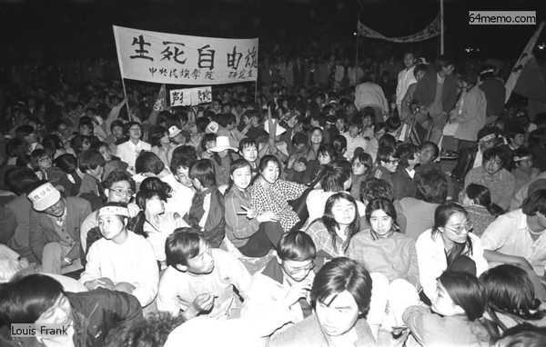
（横幅：
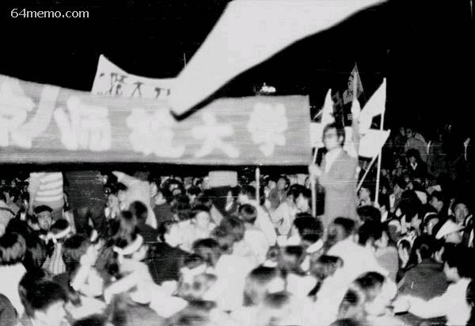
（横幅：
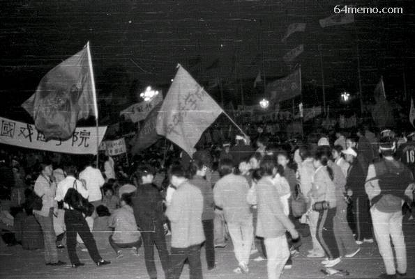
（横幅：
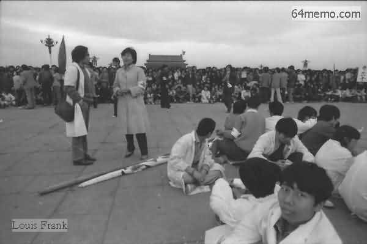
（医护人员在傍晚时分到了广场）
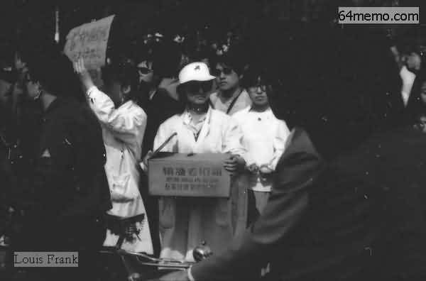
（来自首都医学院的医护人员）
在很多关于六四绝食的照片中，都可以看到纪念碑前方有一面写着“绝食”的黑色旗帜。这个“绝食黑旗”是封从德组织几个学生一起制作的，由于面积太大，单单写那两个字就用掉两桶油漆。在封从德所写的《六四日记——广场上的共和国》一书中，他回忆说：搞这么大的旗帜，是为了让长安街上经过的北京市民也能清楚看到。
这面旗帜在13日晚间22时才制作完毕，大约在深夜时分（或次日凌晨时分）带到广场上升起。下面这张照片，大概是在次日（14日）白天拍摄的。
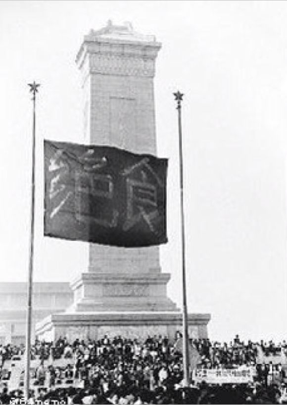
（纪念碑前方的“绝食黑旗”）
经历过八九年的读者，对 “一小撮别有用心的” 这个定语，应该是耳熟能详。这个定语频繁出现在各种官方媒体中，听得俺耳朵都长茧。今天这篇，俺就借用这个定语，来说说当年极个别的【另类绝食者】。
在《王丹回忆录》中提及他在广场上碰到一个令他感到意外的绝食者（以下是原文摘录，粗体是俺标注滴）：
在聊这个“姓肖的学生会主席”之前，为了避免误导读者，俺有必要先说明一下：
当时的北京各大高校都有【官方的】学生组织（比如“校学生会”）。这些官方学生组织的头头，【不一定】都是朝廷的走狗。举个反例：本系列前面提到的李进进（参见第12篇），原先是北大研究生院的学生会主席，然后成为学运骨干，六四屠城之后被捕坐牢。
好，现在开始来聊这个“姓肖的学生会主席”。这个人是谁捏？如果你关注过最近半年（2017上半年）的政治热点新闻，应该听说过【肖建华】这个人（维基百科的介绍在“这里”）。
（肖建华为数不多的正面照片）
此人是天朝亿万富豪，大名鼎鼎的“明天系”幕后老板，操纵多家上市公司，长期充当某些权贵的白手套，牵涉多起重大经济案。为了躲避抓捕，多年来一直躲在香港的四季酒店（超豪华酒店）。今年（2017）春节被大陆公安跨境抓捕（当时也算是个大新闻）。
此人是怎么当上北大学生会主席的捏？据某些北大校友的回忆：
当年的选举程序是——每个系出两名代表，选举学生会主席。肖建华找到同学中比较有钱的“金主”，由这些“金主”赞助，然后他出面请很多系的代表去燕春园吃饭（前面提到，这是当年北大最高档的饭馆），于是他就当选了。
聊到这里，大伙儿就明白此人是怎样的一个货色。所以王丹看到他也在绝食队伍中，感到很惊讶。
这样一个货色，也跑去参加绝食抗议，俺不得不怀疑：此人就是朝廷方面的卧底。当然啦，俺没有证据，仅仅是猜测。
这已经是本系列第三次聊到关于卧底的猜测。考虑到某些读者比较健忘，咱们来复习一下：
第一次提及卧底
4月23日晚上，刘刚找来一些学运的积极分子，开了一个【秘密会议】，筹划成立北高联（高自联）。结果第二天，国安部的内部报告中就有这次会议的【详情】。
第二次提及卧底
如今臭名昭著的毛粉兼薄粉孔庆东（绰号：孔三妈、孔斜眼），学运期间当选北大筹委会的【五人常委】之一，还做过北大筹委会的【主席】。这个身份，绝对是学运骨干。结果六四屠城之后，其它几个常委，坐牢的坐牢（比如王丹），逃亡的逃亡（比如沈彤）。而这个孔庆东，嘛事儿没有，继续留在北大完成学业，如今竟也混到了北大教授。要说他不是卧底，你还能想到其它解释吗？
聊完卧底，再来说说知识界的动态。
当日晚间22时左右，北大校内贴出了一封知识分子的联名公开信，是写给“裆中央、全国人大常委会、国务院”。针对当下的绝食抗议，信中提到了几点建议：
当晚在北大还贴了另一份大字报，标题是《我们再也不能沉默了》，署名作者是：严家其、苏绍智、包遵信。这份大字报动员更多的知识分子参加预定于5月15日发起的“知识界大游行”（计划从复兴门立交桥步行至天安门），以声援学生绝食活动的。
这份大字报说：
正如发起绝食的学生领袖所预料的，“绝食”是各种抗议手段中的杀手锏。面对此种杀手锏，朝廷方面很快就有了反应，包括如下几个：
在14日凌晨2点左右（也就是绝食第一夜），国家教委的官员（李铁映）和北京市委的官员（李锡铭、陈希同）带着随从人员到广场慰问学生，并劝学生返校。现场有学生大喊：太晚了，太晚了！
这几个官员还分头找绝食的学生谈话，但都没有结果。“没有结果”其实是意料之中。前面俺全文引用了《绝食宣言》，里面关于【绝食要求】的原文如下：
考虑到李锡铭和陈希同都是朝廷中的保守派（本系列前几篇分析过这点），对他们这种【象征性】的慰问，就不会觉得奇怪了。
在13日傍晚时分，中央统战部开始出面进行斡旋。这次斡旋不光找来了好几个关键性的学生领袖，而且也找来了当时人在北京的很多有名望有影响力的知识分子。其实只要看统战部找来磋商的人员名单，就可以意识到统战部是想努力化解绝食抗议的。
在化解绝食危机这件事上，为啥统战部表现得比北京市委更加积极？因为当时的统战部部长是阎明复。此人是改革派，也是赵紫阳的亲信之一。所以统战部的这次斡旋实际上代表了赵紫阳的意思。而赵的政治算盘是：尽量给学运降温（关于赵紫阳的博弈策略，俺在本系列前几篇有分析）
关于这次斡旋，俺会在后面重点介绍一下。
回到本系列的目录
最近几天，俺把这个系列的前面30篇又整理了一下——主要是统一排版的样式。比如所有照片都统一用居中对齐，照片的说明统一都放在照片下方，也是居中对齐，并都加上全角括号。这样照片的说明文字就不容易跟正文混淆。
本系列的上一篇介绍了绝食抗议的决策是如何作出，今天这篇讲讲绝食第一天的情况。
★风萧萧兮易水寒
先来介绍一下几个高校的绝食学生在出发之前的情形。
◇北京大学
在次的绝食抗议中，北大是毫无疑问的主力。一个主要原因是柴玲在北大做了一个很煽情的演讲《我为什么要绝食？》（关于这个演讲，本系列前一篇有提及）。所以在这次绝食运动中，北大签名绝食的人数最多，而且比例很高——各高校签名参与绝食的大约三百到四百人，其中北大占了一百多人。
5月13日一大早，北大三角地就贴出了《绝食宣言》。到了中午时分，校广播站通报了绝食的行动方案，包括“什么时候出发，走什么路线，相关的口号”。（北大筹委会本来是反对搞绝食抗议的，但是同意把“校广播站”借给绝食的学生使用）
校内也贴出了相关的大字报，介绍相关的行动计划（比如下面这几张）：
（北大学生在准备绝食的大字报）
（大字报《绝食送行队》）
那天中午，北大的一些青年教师（包括如今名气很大的钱理群）在燕春园（当年北大最高档的校内餐厅）宴请那些参与绝食的学生。那顿饭被称为“最后的午餐”。
北大作家班的学员为绝食学生写了一个横幅：
壮士一去盼回还，挂在燕春园饭馆内。很多绝食学生在这个横幅前拍照留念。
（头缠白布条的绝食学生在北大燕春园吃“最后的午餐”）
在正式出发之前，为了表示严肃性，所有签名参与绝食的学生先在校内作一次宣誓，地点在29号楼前面（此楼前有一个“D & S”的金属雕像，象征“民主与科学”），由赵体国负责领读誓词（他在之前的示威游行中负责纠察队）。在宣誓之前，赵体国再次强调了绝食的纪律，他的原话是：
你们都明白绝食意味着什么吗？那意味着你们必须拿出献身的勇气！别以为绝食之后还能偷吃点东西，谁要是抱着这样的侥幸心理就不要在这里宣誓；谁要是绝食之后还这么做，就是对别人的出卖！为啥俺这里能一字不差地复述他的原话捏？因为封从德在现场做了录音，上述赵体国的话是根据封从德写的《六四日记——广场上的共和国》摘录的。以下是那本书第276页的照片。
（赵体国带领北大绝食学生宣读绝食誓言）
北大的队伍于中午12点半在南门出发。当时有人在校门口贴了对联：风萧萧兮易水寒，壮士一去兮不复还。校门口挤满了围观的学生和市民。从下面的照片可以看出，连校门旁边的屋顶上都站了好些人。
（对联：
风萧萧兮易水寒）
（对联：
壮士一去兮不复还）
◇政法大学
说完北大，再顺便说一下政法大学。
如今名气很大的良心律师浦志强，当年是政法大学绝食抗议的积极分子。以下摘自吴仁华所写的《八九天安门事件大事记》（引文中的小括号是俺标注滴）：
（13日）午饭前，中国政法大学硕士研究生浦志强等人在校门口拉着“为民主自由绝食”的横幅，因报名参加绝食者不多，浦志强悲愤呼吁“难道法大的男子汉都死绝了吗？！ ”我（吴仁华）与青年教师刘斌临时买了巧克力让他们路上补充热量，以四特酒为他们壮行。临出发，浦志强对着校门磕头诀别。
（13日中午，浦志强在校门口拉出“为民主自由绝食”的横幅）
（浦志强在广场上演讲，头上缠着“法大绝食”的布条，拍摄日期不详）
◇北京师范大学
北师大的情形与北大完全相反——在当日上午【没有】进行任何准备工作。以下是王超华本人的叙述，摘自《回顾与反思——六四流亡学生17人》一书。
這時我在北大發現，北大已經是相當有秩序了。我不知道他們有一個餞別的宴會，衹看見他們一組一組的來報名，大概是十一點的時候，我以為他們要出去了。然後我就騎車出去，先到師大。到師大的時候，發現冷冷清清。走到他們那個廣播站，看見梁二，我說﹕“你們怎么還在這兒呀？北大同學呆會兒就要過來了。”他說：“哎，不是說不去了嗎？”我說：“怎么不去啊，還去呀。”梁二因為沒有參加常委會，所以他就趕緊廣播。師大倒是一廣播就出來了。《回顾与反思》一书是《八九学运回顾与反思研讨会》的会议记录。这个会议是1991年7月在巴黎召开滴，参会的17人都是流亡海外的学运骨干分子。这17人中就包括王超华与梁二（原名：梁擎暾）。梁二没有对王超华所说的表示异议，说明王所说的属实。
从王超华所说的这段至少可以看出：北师大的学生组织是【比较混乱】的。本系列的上一篇介绍了5月11日策划绝食的过程。其中提到有6个学生领袖在某个小饭馆开会讨论绝食的行动计划。这6人中，有3人就来自北师大，分别是：吾尔开希、程真、杨朝晖。结果到了5月13日那天，各高校的绝食队伍要正式启程前往广场，途中要到北师大会师。而北师大本校的学生组织，竟然都不知道这个计划！（是不是很讽刺？）有3个知情人，有超过一天时间，竟然没有把信息传达下去——这说明存在严重的沟通问题。
在本系列的第21篇，俺用了整整一篇博文来写《反思学运初期暴露出的问题》。这些弊端，在5月13日的北师大，再次得到体现。
★关于《绝食书》与《绝食宣言》
大部分谈及六四的书籍或文章，都会提到《绝食书》或者《绝食宣言》。所以俺把这2份重要的文档全文引用如下：
◇《绝食书》全文
在阳光灿烂的五月里，我们绝食了。在这最美好的青春时刻，我们却不得不把一切生之美好绝然地留在身后了，但我们是多么的不情愿，多么的不甘心啊！
然而，国家已经到了这样的时刻：物价飞涨、官倒横流、强权高悬、官僚腐败、大批仁人志士流落海外、社会治安日趋混乱，在这民族存亡的生死关头，同胞们，一切有良心的同胞们，请听一听我们的呼声吧！
国家是我们的国家，
人民是我们的人民，
政府是我们的政府，
我们不喊，谁喊？
我们不干，谁干？
尽管我们的肩膀还很柔嫩，尽管死亡对于我们来说，还显得过于沉重，但是，我们去了，我们却不得不去，历史这样要求我们。
我们最纯洁的爱国感情，我们最优秀的赤子心灵，却被说成是「动乱」，说成是「别有用心」，说成是「受一小撮人的利用」。
我们想请求所有正直的中国公民，请求每个工人、农民、士兵、平民、知识分子、社会名流、政府官员、警察和那些给我们炮制罪名的人，把你们的手抚在你们的心上，问一问你们的良心，我们有什么罪？我们是乱动吗?我们罢课，我们游行，我们绝食，我们藏身？到底是为了什么？可是，我们的感情却一再被玩弄，我们忍着饥饿追求真理却遭到军警毒打……学生代表跪求民主却被视而不见，平等对话的要求一再拖延，学生领袖身处危难……
我们怎么办？
民主是人生最崇高的生存感情，自由是人与生俱来的天赋人权，但这就需要我们用这些年轻的生命去换取，这难道是中华民族的自豪吗？
绝食乃不得已而为之，也不得不为之。
我们以死的气概，为了生而战。
但我们还是孩子，我们还是孩子啊！中国母亲，请认真看一眼你的儿女吧，虽然饥饿无情地摧残着他们的青春，当死亡正向他们逼近，你难道能够无动于衷吗？
我们不想死，我们要好好地活着，因为我们正是人生最美好之年龄；我们不想死，我们想好好学习，祖国还是这样的贫穷，我们似乎留下祖国就这样去死，死亡决不是我们的追求。但是如果一个人的死或一些人的死，能够使更多的人活得更好，能够使祖国繁荣昌盛，我们就没有权利去偷生。
当我们挨着饿时，爸爸妈妈们，你不要悲哀；当我们告别生命时，叔叔阿姨们，请不要伤心，我们只有一个希望，那就是让我们能更好地活着，我们只有一个请求，请你们不要忘记，我们追求的绝不是死亡！因为民主不是几个人的事情，民主事业也绝不是一代能够完成的。
死亡，在期待着最广泛而永久的回声。
人将去矣，其言也善；鸟将去矣，其鸣也哀。
别了，同仁，保重！死者和生者一样的忠诚。
别了，爱人，保重！舍不下你，也不得不告终。
别了，父母！请原谅，孩子不能忠孝两全。
别了，人民！请允许我们以这样不得已的方式报忠。
我们用生命写成的誓言，必将晴朗共和国的天空！
北京大学绝食团全体成员
一九八九年五月十三日
◇《绝食宣言》全文
各位亲爱的同胞，在继前几次声势浩大的示威游行之后，今天，我们决定在天安门广场进行绝食斗争。
绝食原因：第一，抗议政府对北京学生罢课采取麻木冷淡态度；第二，抗议政府拖延与北京高校对话代表团的对话；第三，抗议政府一直对这次学生民主爱国运动冠以「动乱」的帽子及一系列歪曲报道。
绝食要求：第一，要求政府迅速与北京高校对话团进行实质性的、具体的、平等的对话；第二，要求政府为这次学生运动正名，并给予公正评价，肯定这是一场爱国、民主的学生运动。
绝食时间：五月十三日下午二时出发。
绝食地点：天安门广场。
绝食口号：不是动乱、立即平反！立即对话、不许拖延！为民绝食、实属无奈！世界舆论、请声援我们！各界民主力量，请支持我们。
（张贴在北大的《绝食宣言》大字报）
◇关于《绝食书》作者的争议
《绝食宣言》是王丹起草的，而《绝食书》的作者有点争议——有的说是柴玲，有的说是白梦（北大作家班成员）。
在《回顾与反思——六四流亡学生17人》一书中，柴玲本人的复述如下：
我順便提一下絕食書的事情。有個女生對我說﹕"你們有沒有這種絕食書，好象是你們的遺言﹖"我說﹕"我們有《絕食宣言》了。是王丹寫的，就是絕食要求一、二、三。"她說﹕"你這太幹巴巴了。你不知道絕食完了會有什么結局，也可能就是你們生命的一段重要歷程，也可能就是最後的歷程。你要不要給你的母親，給這個人民，還給那些不了解的老百姓留下些什么東西，讓他們理解你們。你們不就想看看人民的面孔，看看政府的面孔﹖象這樣的話，你把它寫上去。"我說這個主意很好。一個叫何桂芳的人，他在旁邊一個勁的說﹕"我最佩服的就是秋瑾，'人生自古誰無死，留取丹心照汗青'。我真希望柴玲說出這句話來。"我當時氣得要命，我心想，我們是為了生而戰，我們以死的氣概為生而戰。這個當時演講的時候也說過了。我氣得要命，整個思路就全都給攪得亂七八糟。後來張伯笠來找到我，"啊呀，柴玲、老封快去我們那兒。白夢聽了你們的演講以後就哭啊，結果一口氣跑到北大外面買了一大鍋餛飩，等了你和老封趕快去吃，還熱著呢。"說那個餛飩當時沒有盆裝，還跟那個個體戶租了一個盆，交了五塊錢押金，趕快去吃，好趕快還盆把押金要回來。去了以後，白夢也在。
第二天早上，用了一個早晨，寫了一些絕食書，寫得很痛苦。那個時候真的不是鬧著玩的時候了，你真的覺得要跟生命中成長以來一塊伴隨成長的東西告別。白夢在那看了，抽著煙很嚴肅地說﹕"把東西交給我吧，十二點鐘你來拿。"然後，我就再去籌委會，回來時，把東西拿了。
在张伯笠（北大作家班学员，学生领袖）所写的《逃亡者》一书第8章，也提到《绝食书》。俺引述如下：
五月十三日，持续了半个月的不死不活的状态被打破了，北京大学等高校的同学采用了和平斗争的最后手段──绝食。绝食的目的是迫使中共否定“四．二六社论”。承认学生运动为爱国民主运动。同时，开辟对话渠道，并通过新闻媒体实况转播。
我因为参加首都知识分子起草《五一六声明》的会议，在回校途中到北京电影制片厂谈我的电视连续剧《酋长》谈到天亮。上午八点钟才回到北大。
柴玲，封从德等人都在我的宿舍，《新闻导报》的王果为和曹为等人也在我宿舍等我，我们简单交换了一下意见，立即分散行动，
柴玲想写一个绝食书，我忙着要出《新闻导报》关于绝食的号外，把白梦推荐给她，帮她起草绝食书。我叮嘱白梦，写好后立即给我复印或抄一份，我将用在《绝食号外》的第一版。
临近中午，白梦给了我《绝食书》的原稿。那篇绝食书写的很感性，读来令人落泪，但我当时是以一个报纸的总编辑角度去读的，我对其中那段：“国家是我们的国家，人民是我们的人民，政府是我们的政府，我们不说谁说？我们不喊谁喊？我们不干谁干？”这段提出不同意见，我认为这句是文化大革命时红卫兵最常用的口号式的语言，放在绝食书中显得极不协调，白梦和我辩论，坚持要保留，白梦是我同班同学，在这场运动中一直表现出色。
对于《绝食书》，俺个人的判断是：柴玲只是写了初稿，大部分内容应该白梦完成。《绝食书》的煽情效果，应该是白梦的功劳。
★默默地奔赴广场
绝食团前往广场的这次游行，和以往的游行很不同。以往的游行通常是口号震天响，而13日这次，大多数人都是默默地走着。不论是签字绝食的学生，还是护送前往的学生，心情都很沉重。
◇先到北师大会合
当日下午15时左右，来自13所高校参与绝食的大约300多人在北师大的操场上集合。很多绝食的学生在头上缠了白色布条。大多数布条上写着“绝食”，还有些布条上写着“拼死一搏”、“腐败的掘墓人”、“因噎废食”之类的字样。另有一些绝食的学生绑着腰带，上面写着：“衣带渐宽终不悔，为民消得人憔悴”、“学子忍死望民主，何处今宵得自由”、“生也忧忧，死也悠悠”、“为了尊严与自立、我们只有以死抗争”......
以下几张照片是“北大绝食团”及“绝食送行队”骑车前往北师大的路上拍摄的。
（骑车的是李禄，后座上是柴玲；另一个骑车的是熊焱）
（某学生衣服上的标语：
绝食！妈妈，我不是好儿子，但你会为我自豪！）
◇再集合去广场
在北师大会合后，这300多名绝食者在两千多位学生的护送下，前往天安门广场。沿途围观的群众大概有几万人。据《王丹回忆录》中记载：他与吾尔开希、马少方、杨朝晖，4人手拉手走在队伍最前面的。
（队伍前列的4个学生领袖，从左往右依次是：杨朝晖、王丹、马少方、吾尔开希）
（紧跟在几个学生领袖之后的，是“绝食请愿团”的大旗。靠近镜头的女生大概是程真）
（最左边的是柴玲，身后的横幅写着：
救救国家）
（横幅标语：
我们想活着看到四化——北大绝食一分队）
（横幅标语：
抗议动乱的帽子 抗议拖延的手段＆
为民而死在所不惜）
（纠察队抓住一个可疑的人，想混入队伍搞破坏）
★广场上的绝食团
◇抵达广场
下午15时到16时，陆续有队伍抵达广场。这些是一路骑车过去的，所以先到。先期抵达的人数大约四五百左右。
到了17时左右，步行的大部队抵达了广场（这批超过一千人，包括绝食者、救护队、纠察队、宣传队）。
（这4个排头兵，前面已经介绍过了。背景的建筑是天安门城楼）
（这4个排头兵，前面已经介绍过了。背景的建筑是人民大会堂）
（写有《绝食誓言》的纸牌）
标语牌：
彻底平反，不是动乱；要求对话，反对拖延。
（某绝食者写的遗书）
（某绝食者写的遗书）
◇集体宣誓
大约在17时40分，王丹带领所有绝食者进行集体宣誓，连喊三遍：
为了中国的民主化进程，为了祖国的繁荣昌盛，我自愿绝食。坚决服从绝食团的纪律。不达目的，誓不罢休！
下面这张就是当时的照片，很经典，在许多六四相关的网站上都能看到。
（最初的绝食团在集体宣誓）
◇记者招待会
当日傍晚18时左右，王丹、王超华、马少方作为绝食团和北高联（高自联）的代表，在广场边上的中国革命博物馆（如今的“中国国家博物馆”）西侧台阶举行中外记者招待会。王丹对中外记者宣读了《绝食宣言》（此宣言的内容，前面已经介绍过了），然后几个学生领袖回答了记者提问。王超华作为北高联的常委，本来是非常反对绝食。后来她发现无力阻挡，为了避免造成学生领导层的分裂，只好改变立场。
说一个小插曲：
王丹的母亲正好是这个博物馆的工作人员（比较凑巧）。从13日开始，王母就每天睡在博物馆的办公室（打地铺），以便就近关照王丹。
◇绝食者在广场的第一夜
那天晚上，绝食学生们在广场上度过了第一晚。以下是当时的照片。
（横幅：
生死自由魂）
（横幅：
北京师范大学）
（横幅：
中国戏剧学院）
（医护人员在傍晚时分到了广场）
（来自首都医学院的医护人员）
◇绝食黑旗
在很多关于六四绝食的照片中，都可以看到纪念碑前方有一面写着“绝食”的黑色旗帜。这个“绝食黑旗”是封从德组织几个学生一起制作的，由于面积太大，单单写那两个字就用掉两桶油漆。在封从德所写的《六四日记——广场上的共和国》一书中，他回忆说：搞这么大的旗帜，是为了让长安街上经过的北京市民也能清楚看到。
这面旗帜在13日晚间22时才制作完毕，大约在深夜时分（或次日凌晨时分）带到广场上升起。下面这张照片，大概是在次日（14日）白天拍摄的。
（纪念碑前方的“绝食黑旗”）
★一小撮别有用心的绝食者
经历过八九年的读者，对 “一小撮别有用心的” 这个定语，应该是耳熟能详。这个定语频繁出现在各种官方媒体中，听得俺耳朵都长茧。今天这篇，俺就借用这个定语，来说说当年极个别的【另类绝食者】。
在《王丹回忆录》中提及他在广场上碰到一个令他感到意外的绝食者（以下是原文摘录，粗体是俺标注滴）：
我甚至非常惊讶地看到当时的北大学生会肖姓主席也在绝食队伍中，他看到我有点尴尬，但还是大方地表示：这么多同学都已经参加了绝食，他也不能落后。
在聊这个“姓肖的学生会主席”之前，为了避免误导读者，俺有必要先说明一下：
当时的北京各大高校都有【官方的】学生组织（比如“校学生会”）。这些官方学生组织的头头，【不一定】都是朝廷的走狗。举个反例：本系列前面提到的李进进（参见第12篇），原先是北大研究生院的学生会主席，然后成为学运骨干，六四屠城之后被捕坐牢。
好，现在开始来聊这个“姓肖的学生会主席”。这个人是谁捏？如果你关注过最近半年（2017上半年）的政治热点新闻，应该听说过【肖建华】这个人（维基百科的介绍在“这里”）。
（肖建华为数不多的正面照片）
此人是天朝亿万富豪，大名鼎鼎的“明天系”幕后老板，操纵多家上市公司，长期充当某些权贵的白手套，牵涉多起重大经济案。为了躲避抓捕，多年来一直躲在香港的四季酒店（超豪华酒店）。今年（2017）春节被大陆公安跨境抓捕（当时也算是个大新闻）。
此人是怎么当上北大学生会主席的捏？据某些北大校友的回忆：
当年的选举程序是——每个系出两名代表，选举学生会主席。肖建华找到同学中比较有钱的“金主”，由这些“金主”赞助，然后他出面请很多系的代表去燕春园吃饭（前面提到，这是当年北大最高档的饭馆），于是他就当选了。
聊到这里，大伙儿就明白此人是怎样的一个货色。所以王丹看到他也在绝食队伍中，感到很惊讶。
这样一个货色，也跑去参加绝食抗议，俺不得不怀疑：此人就是朝廷方面的卧底。当然啦，俺没有证据，仅仅是猜测。
这已经是本系列第三次聊到关于卧底的猜测。考虑到某些读者比较健忘，咱们来复习一下：
第一次提及卧底
4月23日晚上，刘刚找来一些学运的积极分子，开了一个【秘密会议】，筹划成立北高联（高自联）。结果第二天，国安部的内部报告中就有这次会议的【详情】。
第二次提及卧底
如今臭名昭著的毛粉兼薄粉孔庆东（绰号：孔三妈、孔斜眼），学运期间当选北大筹委会的【五人常委】之一，还做过北大筹委会的【主席】。这个身份，绝对是学运骨干。结果六四屠城之后，其它几个常委，坐牢的坐牢（比如王丹），逃亡的逃亡（比如沈彤）。而这个孔庆东，嘛事儿没有，继续留在北大完成学业，如今竟也混到了北大教授。要说他不是卧底，你还能想到其它解释吗？
★知识界的反应
聊完卧底，再来说说知识界的动态。
当日晚间22时左右，北大校内贴出了一封知识分子的联名公开信，是写给“裆中央、全国人大常委会、国务院”。针对当下的绝食抗议，信中提到了几点建议：
1. 党和政府的高层领导人尽快与首都高校学生对话代表团进行实质性对话，以求尽快妥善解决问题。这份联名公开信的主要发起人包括：季羡林和严家炎（严家炎和严家其是两个人，别搞混了）。参与联署的多达226人（主要是北大教师）。
2. 应当尽早对这次学潮的性质做客观、公正的评价，以安民心、党心，不应采取拖延政策。
3. 应当高度重视这次绝食请愿活动，以认真、谨慎和人道主义的态度，采取一切措施，保障学生的身心健康。
当晚在北大还贴了另一份大字报，标题是《我们再也不能沉默了》，署名作者是：严家其、苏绍智、包遵信。这份大字报动员更多的知识分子参加预定于5月15日发起的“知识界大游行”（计划从复兴门立交桥步行至天安门），以声援学生绝食活动的。
这份大字报说：
不能再沉默了！拿出我们的良心、勇气和社会责任感吧！！让我们书写历史！！！
★朝廷方面的反应
正如发起绝食的学生领袖所预料的，“绝食”是各种抗议手段中的杀手锏。面对此种杀手锏，朝廷方面很快就有了反应，包括如下几个：
◇国家教委与北京市委的官员上广场慰问
在14日凌晨2点左右（也就是绝食第一夜），国家教委的官员（李铁映）和北京市委的官员（李锡铭、陈希同）带着随从人员到广场慰问学生，并劝学生返校。现场有学生大喊：太晚了，太晚了！
这几个官员还分头找绝食的学生谈话，但都没有结果。“没有结果”其实是意料之中。前面俺全文引用了《绝食宣言》，里面关于【绝食要求】的原文如下：
绝食要求：第一，要求政府迅速与北京高校对话团进行实质性的、具体的、平等的对话；第二，要求政府为这次学生运动正名，并给予公正评价，肯定这是一场爱国、民主的学生运动。以当时的情形，要想满足第二条，就涉及到【改变学运的定性】。除非邓太上皇改变主意，否则其他任何级别的官员（包括总书记赵紫阳），都无法做到这点。而前往广场慰问的那几人，仅仅是省部级官员，他们更加没有权限来答应学生的要求。他们去广场，除了象征性地表示一下慰问，几乎没啥实质性的意义。
考虑到李锡铭和陈希同都是朝廷中的保守派（本系列前几篇分析过这点），对他们这种【象征性】的慰问，就不会觉得奇怪了。
◇统战部的斡旋
在13日傍晚时分，中央统战部开始出面进行斡旋。这次斡旋不光找来了好几个关键性的学生领袖，而且也找来了当时人在北京的很多有名望有影响力的知识分子。其实只要看统战部找来磋商的人员名单，就可以意识到统战部是想努力化解绝食抗议的。
在化解绝食危机这件事上，为啥统战部表现得比北京市委更加积极？因为当时的统战部部长是阎明复。此人是改革派，也是赵紫阳的亲信之一。所以统战部的这次斡旋实际上代表了赵紫阳的意思。而赵的政治算盘是：尽量给学运降温（关于赵紫阳的博弈策略，俺在本系列前几篇有分析）
关于这次斡旋，俺会在后面重点介绍一下。
回到本系列的目录
版权声明
本博客所有的原创文章，作者皆保留版权。转载必须包含本声明，保持本文完整，并以超链接形式注明作者编程随想和本文原始地址：
https://program-think.blogspot.com/2017/06/june-fourth-incident-31.html
本博客所有的原创文章，作者皆保留版权。转载必须包含本声明，保持本文完整，并以超链接形式注明作者编程随想和本文原始地址：
https://program-think.blogspot.com/2017/06/june-fourth-incident-31.html